ErgoDox EZを分解してみたらホットスワップだった
追記：公式にちゃんと書いてありますね。全然見てなかった、というか買ったころはあんまりよくわかってなかった。
あと、ホットスワップなので分解しなくても、キースイッチの交換はできます。
Ergodox EZ: Change It Yourself | ErgoDox EZ
-
Crkbd(コルネ)には最初zilentをつけていたが、どうもタクタイルに慣れず、やっぱりリニアが好きみたいだ。
-
理想的にはCherryMXのピンクが良いのだが、売ってるところが少なそうなんだよなと二の足を踏んでいた。
-
そういえばErgoDox EZはピンク軸にしてたなあ、でもキースイッチの半田を取るのはちょっとな・・・と思いつつ、ひとまず分解してみた。
-
Crkbd(コルネ)のキーキャップもErgoから拝借してるので、キャップ無し
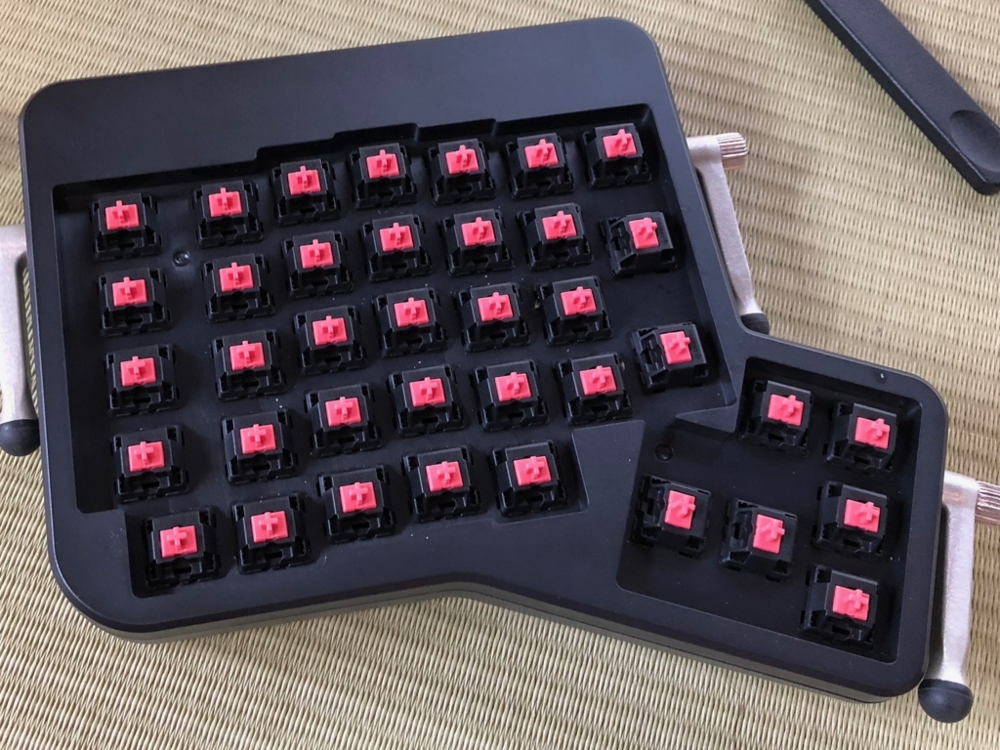 -
裏面のネジをはずせば簡単にはずせるのだが、真ん中のごついシールを剥がさなくてはならない。キレイには元どおりにならないので、やるときは覚悟してください。
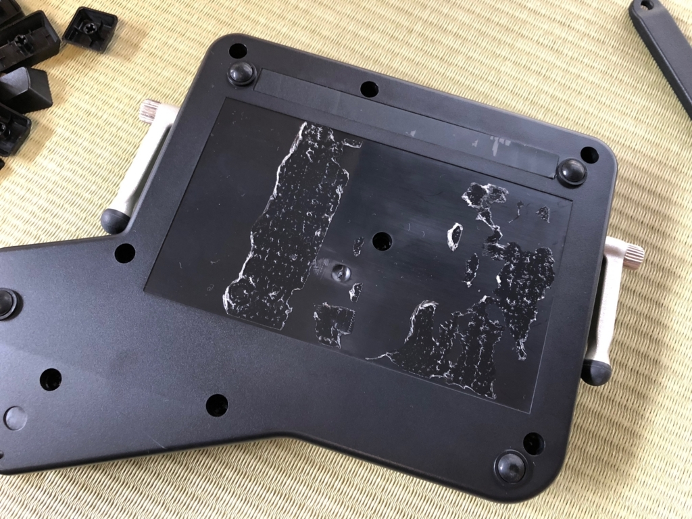 -
ぱかっと開けるとわりとスッキリしてる感じ
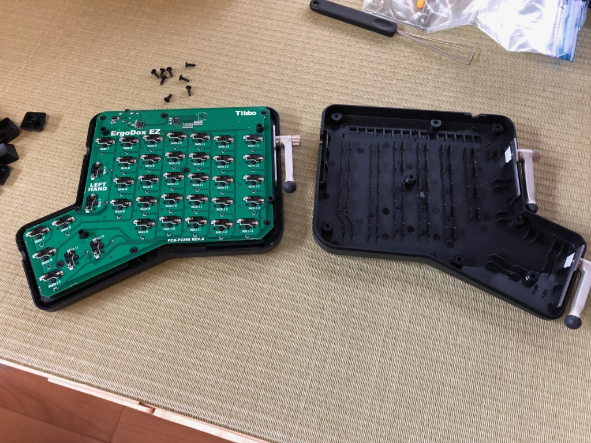 -
なんだか最近見たようなパーツが。
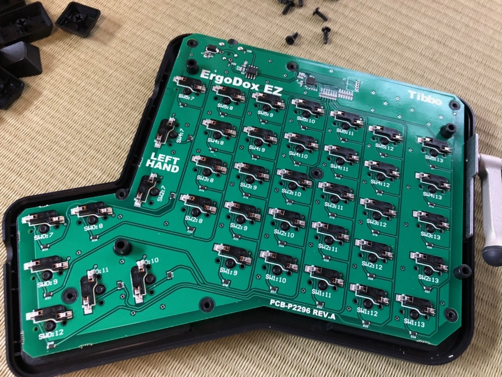 -
基板とケース＋キースイッチがキレイに分かれた！
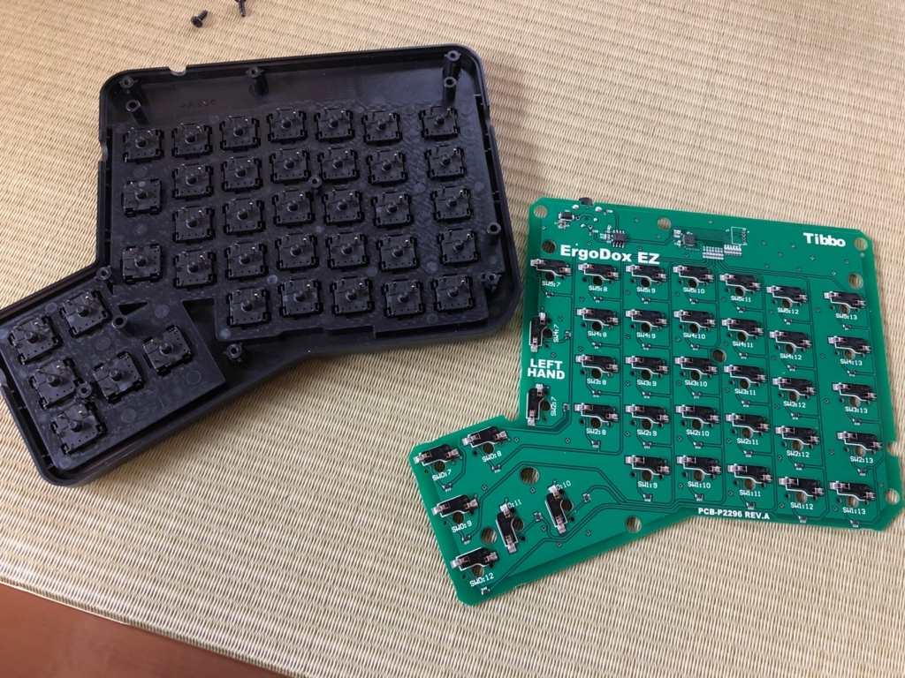 -
おお！これはもしやホットスワップ！
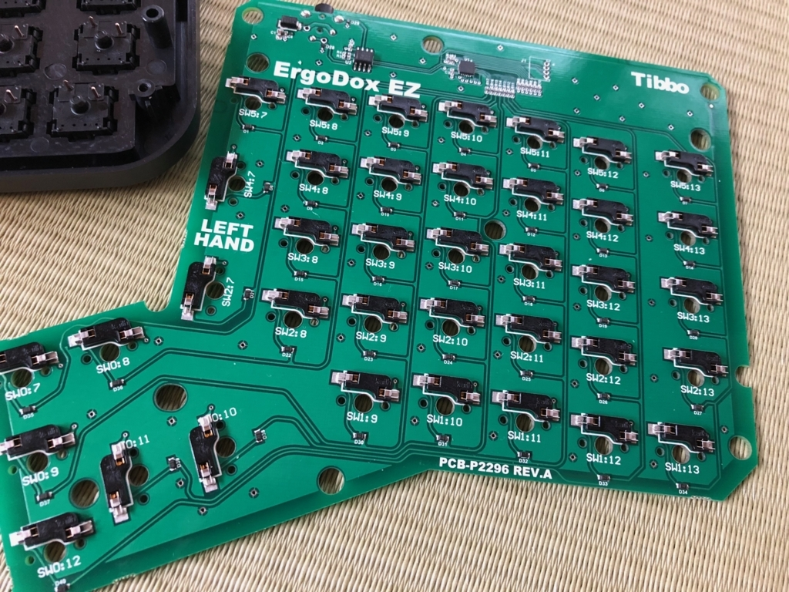 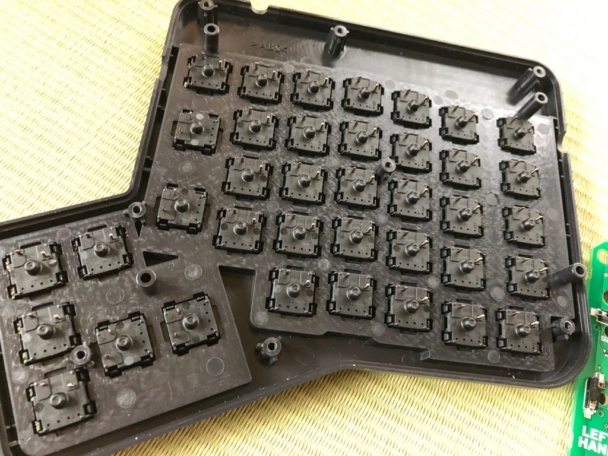 -
裏側からちょっと押してやったら軽く取れた。これで心置きなく使うことができる。
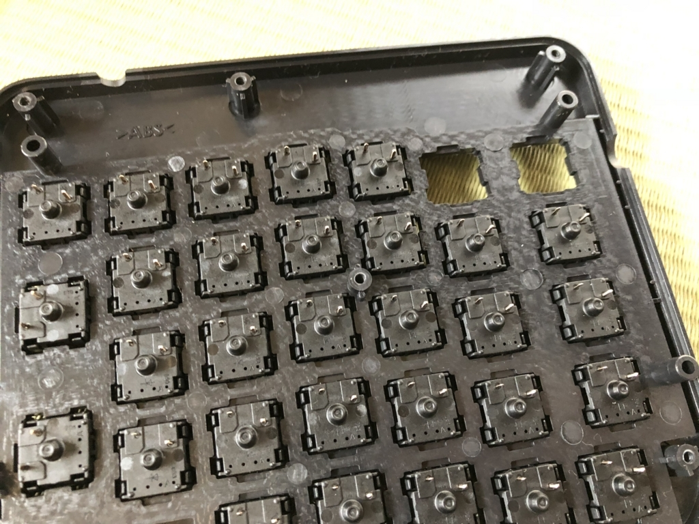 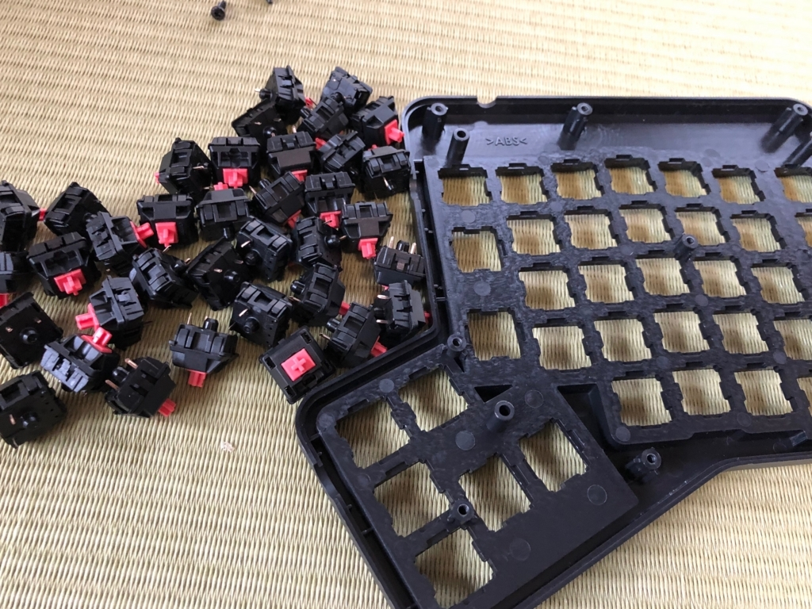 -
キースイッチをはずした後の基板。きれい。
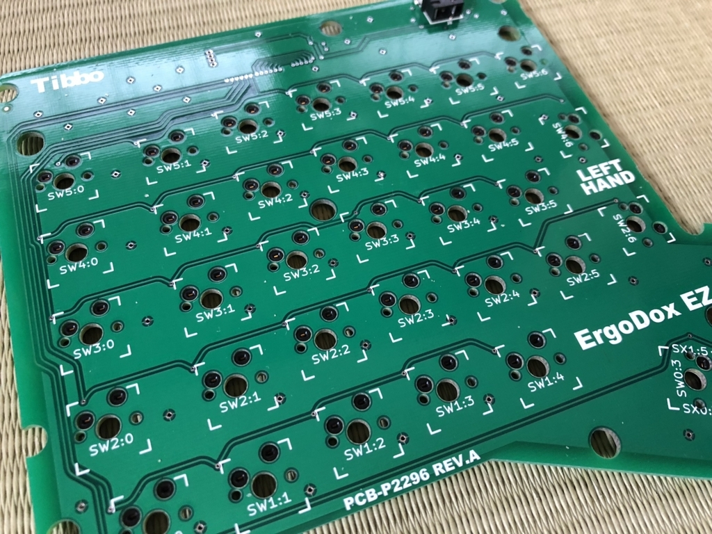 -
Crkbd(コルネ)に使わせていただく
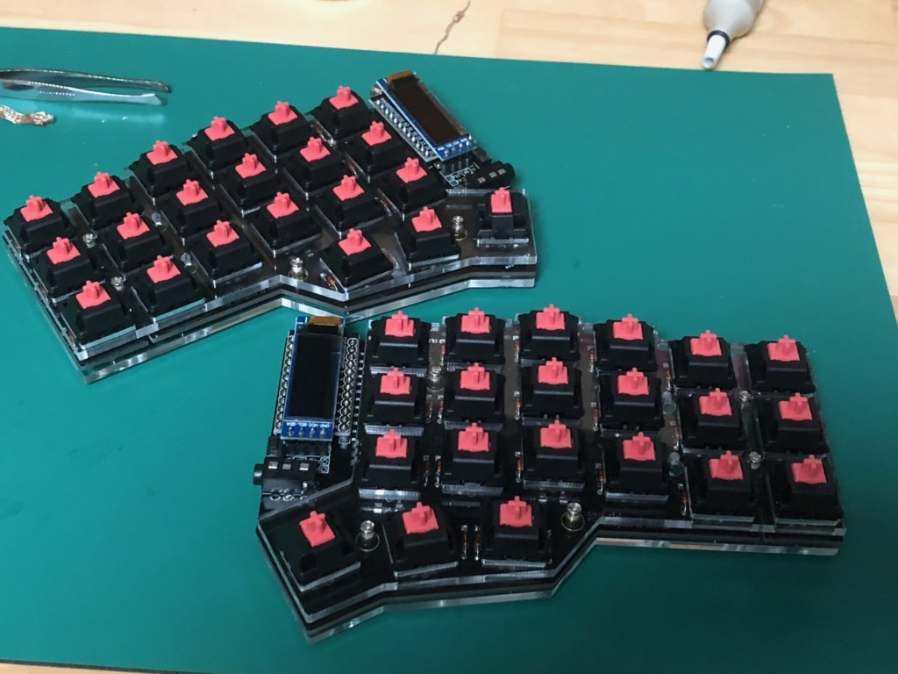 -
ひとまずErgoはそっとしておく。そのうちスイッチとキャップをつけて復活させる予定。
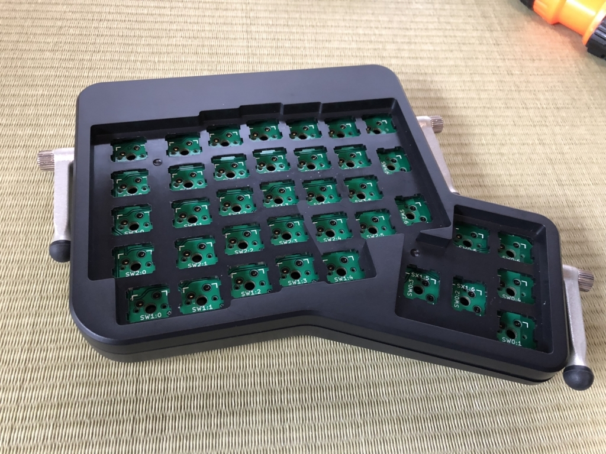 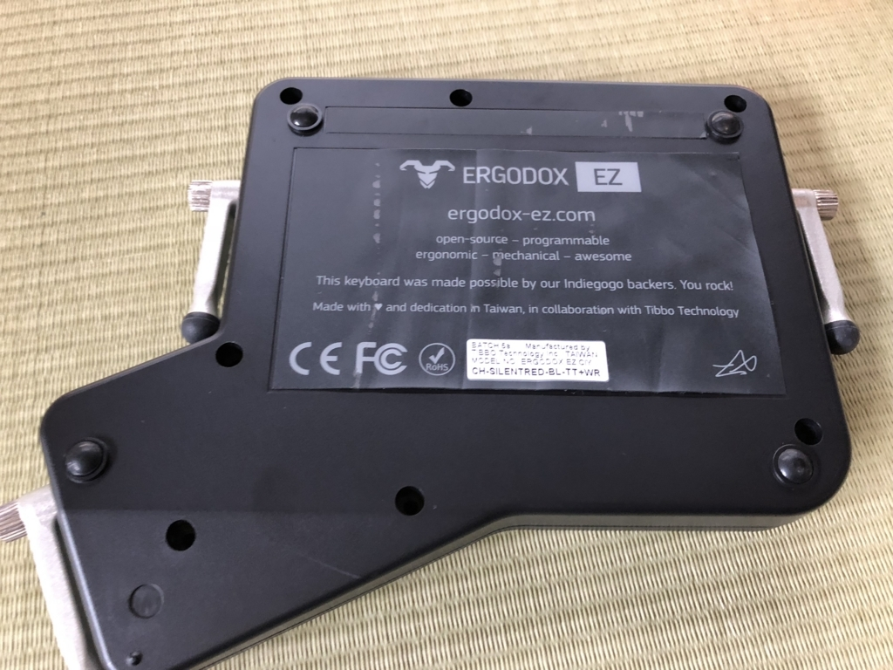